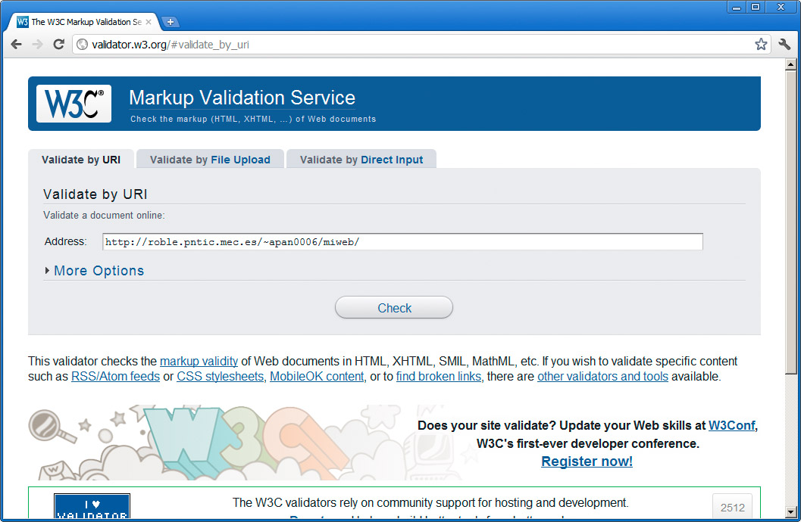
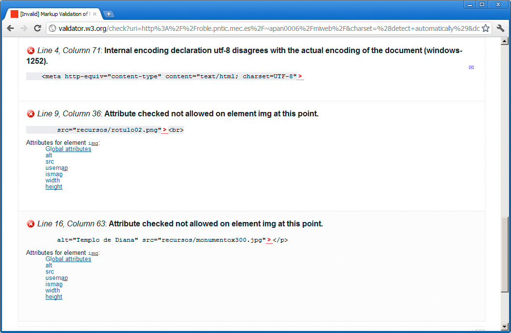
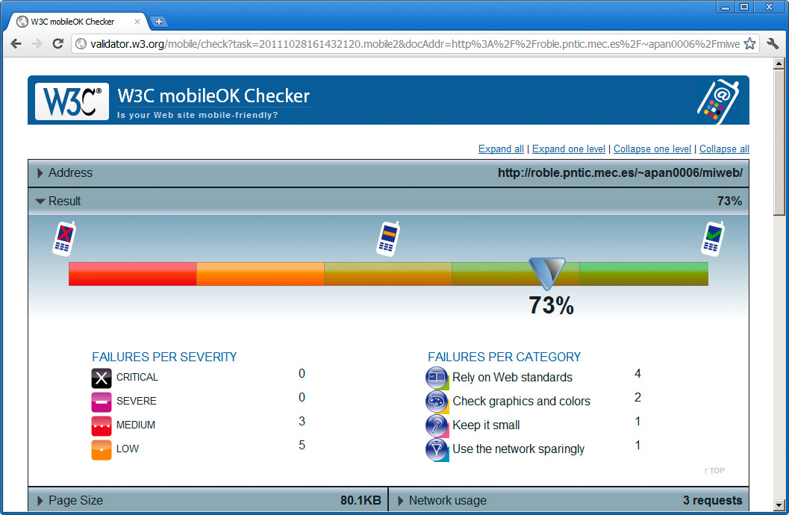
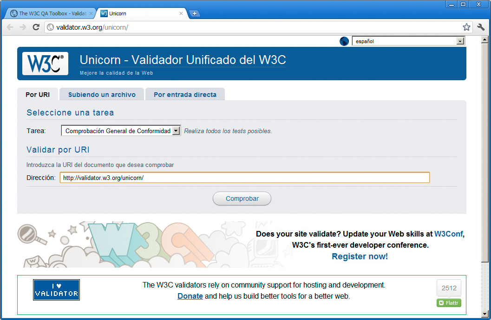
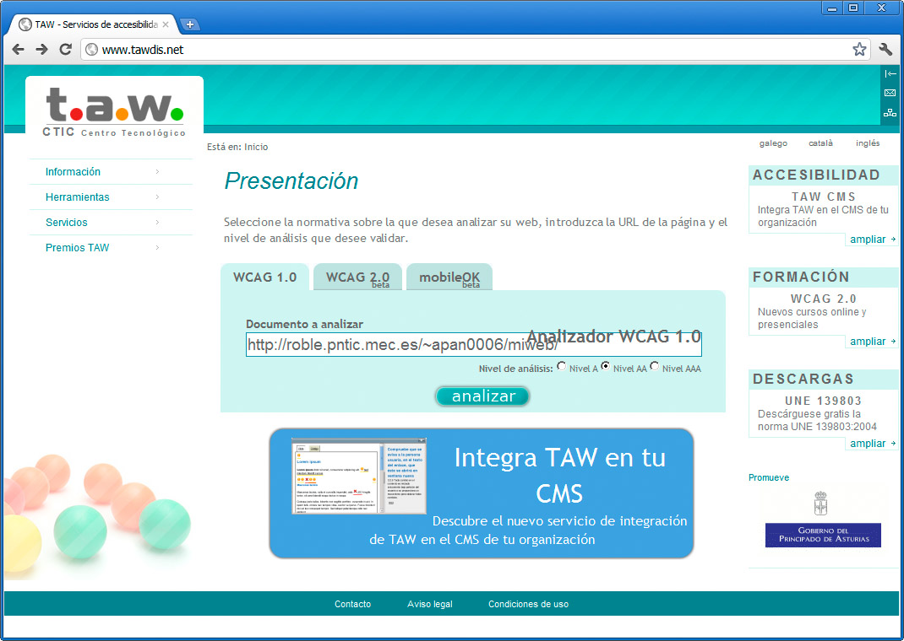
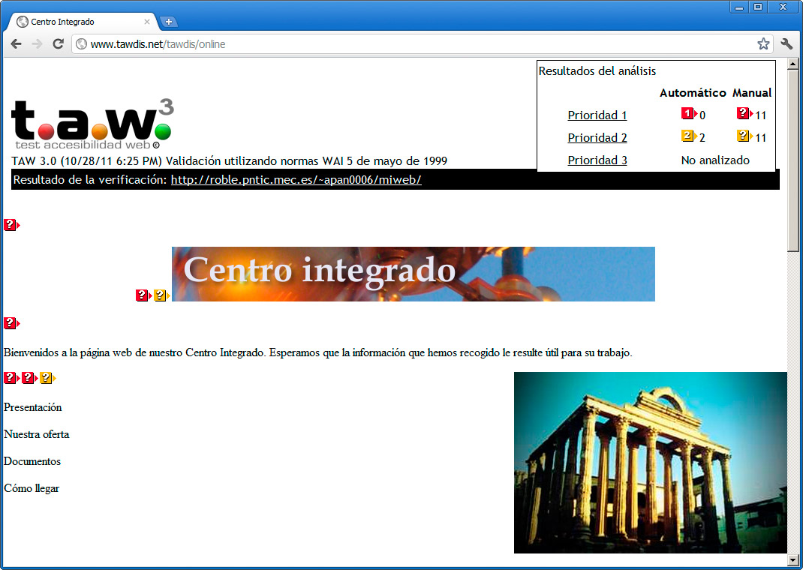

Tras crear una página web podemos emplear algunas herramientas para asegurarnos de que nuestra página web sigue los estándares y se mostrará correctamente en diferentes navegadores.
Validación
Quizás la página más empleada para realizar la validación de una página web es la creada por el consorcio W3C, ya que son ellos quienes velan por los estándares. Su dirección es:
En la página de la figura podemos optar por introducir la URL del recurso que vamos a revisar (Validate by URI) o bien subir una página concreta (en la pestaña Validate by File Upload).

La validación nos proporcionará una lista de errores, como los de la figura, que podemos revisar y corregir hasta conseguir que la página carezca de ellos.

Si bien este proceso no es absolutamente crucial y habrá ocasiones en los que no se pueden resolver todos los errores, es conveniente reducirlos siempre a los mínimos posibles.
Desde esta misma página podemos acceder también a otros recursos de validación del W3C.
- Validación de hojas de estilo (http://jigsaw.w3.org/css-validator/ ) para comprobar las hojas de estilo.
- Link Checker (http://validator.w3.org/checklink ) para buscar enlaces erróneos que no apunten a nada.
- MobileOk Checker (http://validator.w3.org/mobile/ ) que nos da indicaciones para saber si nuestra página se muestra bien en dispositivos móviles y cómo mejorarla. La figura muestra un resultado:

Validación unificada
Por último el W3C cuenta con un validador unificado con todos los recursos anteriores. Se encuentra en la siguiente dirección:
http://validator.w3.org/unicorn/
Con esta página, recogida en la figura, obtendremos todos los posibles problemas que tenga nuestra página web:

Accesibilidad
Otros aspectos a evaluar de nuestra página es su nivel de accesibilidad. Hay varias herramientas online que nos permiten determinar el comportamiento de nuestra página en este sentido y mostrarnos las carencias que tenemos.
Una de ellas es la web de TAW; con ella se le aplican a la página las especificaciones del proyecto Web Accessibility Initiative (WAI), del W3C, que pretenden obtener sitios web totalmente accesibles para todo el mundo, a través de la definición de una serie de normas (WCAG, ATAG y UAAG).
Para acceder a la web emplearemos la dirección:
En el cuadro central introduciremos la dirección de nuestra página web:

Una vez realizada la comprobación, obtendremos un documento con información de los problemas encontrados, como se muestra en la figura:

Pregunta de Elección Múltiple
|
http://jigsaw.w3.org/css-validator/
| |
|
http://validator.w3.org/checklink/
| |
|
http://validator.w3.org/unicorn/
| |
|
http://validator.w3.org/mobile/
| |
|
http://www.tawdis.net/
|
Nota
Para saber más sobre accesibilidad, podemos consultar la siguiente página web: http://www.w3.org/standards/webdesign/accessibility. Esa información está en inglés. También podemos encontrar información en español en la página http://www.w3c.es/traducciones/es/wai/intro/accessibility
Existen otros sistemas diferentes a los del WAI, como el UWEM. En este caso ambos son compatibles.
Enlace
La siguiente dirección incluye una interesante recopilación de validadores no sólo de código o de accesibilidad, sino de otros aspectos como usabilidad, posicionamiento, etc.
http://www.usableyaccesible.com/recurso_misvalidadores.html
Pertenece a la web de usable&accesible, de Olga Carreras.